Antes de empezar
La prueba tiene dos piezas que corren en tu máquina. El servicio de extracción es el contenedor que lee los documentos: clasifica la página, pasa Tesseract por zonas, valida identificadores y arma la evidencia de cada campo. La página del banco de pruebas es donde sueltas los documentos y ves el resultado. La página no habla con el servicio directamente: se lo pasa a su propio servidor, que lo reenvía. Por eso el servicio no necesita abrir puertos ni permisos de navegador, igual que en producción.
Levantar las dos piezas
- Desde la carpeta del paquete (
tools/extractor-documental) construye y arranca el contenedor del servicio:
docker build -f servicio/Dockerfile -t extractor-ocr-local .
docker run -d --name extractor-ocr-local -p 8080:8080 \
--tmpfs /tmp/extractor:uid=1001,gid=1001,mode=700 extractor-ocr-local- Arranca la página del banco de pruebas con
npm run demoy ábrela en http://localhost:4321. - Baja hasta la sección 11 · Por caso de uso. Arriba de las tarjetas debe decir servicio: en línea. Si no, pulsa Comprobar servicio; el texto te dice qué falta.
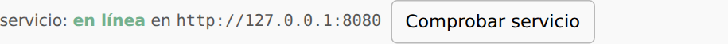
El --tmpfs no es opcional. Es la carpeta temporal donde el motor deja el documento mientras lo lee. Sin ella el contenedor arranca y contesta que está sano, pero cada extracción falla con ENOENT. Se midió el 14 de septiembre de 2026; con el docker-compose.yml del proyecto no pasa, porque el compose la monta solo.
Cómo leer una tarjeta
Cada clase de documento que el proyecto declara tiene su tarjeta. Todas tienen la misma forma, así que una vez que sabes leer una, sabes leer las nueve. La de abajo es la de factura después de soltarle una factura escaneada.
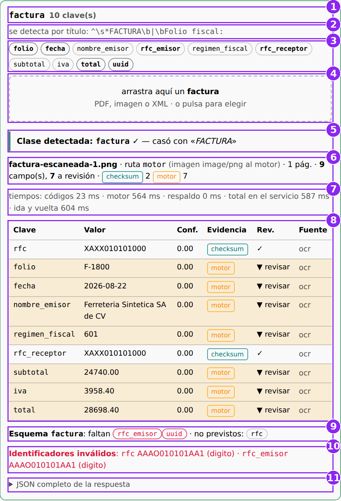
factura con sus once zonas numeradas.- Clase y número de clavesEl nombre técnico de la clase y cuántas claves tiene su esquema. «0 claves» significa que esa clase solo se clasifica, no tiene campos que exigir.
- Cómo se detectaEl patrón de título que el servicio busca en la página. Si un documento tuyo no cae en la clase, aquí ves por qué: su título no dice eso.
- Claves del esquemaLo que esta clase espera encontrar. En negrita las obligatorias; con borde punteado las que llevan validador de dígito verificador (RFC, CURP, NSS).
- Zona de cargaArrastra aquí el documento o pulsa para elegirlo. Acepta PDF, imagen y XML; puedes soltar varios a la vez.
- VeredictoVerde: detectó la clase que esperabas. Rojo: detectó otra, o no pudo leer. Ámbar: ningún título casó. Entre comillas, el fragmento del documento que hizo casar la clase.
- Resumen de la lecturaNombre del archivo, la ruta por la que entró (motor, capa cero o XML), páginas, cuántos campos salieron, cuántos van a revisión y el conteo por tipo de evidencia.
- TiemposMilisegundos por etapa dentro del servicio (códigos, motor, respaldo) y el total de ida y vuelta desde el navegador.
- Tabla de camposCada campo con su valor, la confianza que declaró el motor, su evidencia y si va a revisión humana (▼ revisar) o no (✓). Las filas sombreadas son las que van a revisión.
- Esquema«Completo» si están todas las claves obligatorias; si no, cuáles faltan. «No previstos» son campos que salieron pero no están en el esquema de esa clase.
- Identificadores inválidos y corregidosLos que no pasaron el dígito verificador, con el valor leído y el motivo. Un identificador inválido no aparece en la tabla: se descarta y cuenta como faltante. Cuando una sola sustitución lo arregla, sale en otra línea, «Corregidos por checksum», con el valor leído y el propuesto.
- JSON completoLa respuesta cruda del servicio, plegada. Es lo que recibiría una aplicación que lo consuma.
Colores y evidencia
Dos cosas se leen de un vistazo: el color del borde de la tarjeta, que habla de la clase, y la etiqueta de evidencia de cada campo, que habla de cuánto fiarse del valor. Son independientes: una tarjeta verde puede tener campos que van a revisión.
Borde de la tarjeta
| Color | Qué pasó | Qué haces |
|---|---|---|
| Verde | El servicio detectó la misma clase que esperabas. | Revisa los campos y los faltantes. |
| Rojo | Detectó otra clase, o no pudo leer el documento. | Confirma que el documento es lo que crees; si lo es, el patrón de título del proyecto está mal. |
| Ámbar | Ningún título casó: sin clase no hay esquema que aplicar. | El documento está fuera del proyecto, o su título viene ilegible. |
Evidencia de un campo
| Etiqueta | De dónde sale el valor | Revisión |
|---|---|---|
| codigo | Leído de un código QR o de barras. La fuente más fiable. | ✓ no |
| exacto | Del texto del propio PDF o del XML, letra por letra. Sin OCR. | ✓ no |
| corroboracion | Dos lecturas distintas coincidieron. | ✓ no |
| checksum | Lo leyó el motor, pero pasó el dígito verificador del identificador. | ✓ no |
| motor | Solo lo dice el OCR. No hay segunda fuente que lo confirme. | ▼ sí |
La confianza no decide nada; la evidencia sí. Verás campos con confianza 0.00 o 0.47 marcados ✓, y campos con confianza alta marcados ▼. Es a propósito: sobre el corpus medido, la confianza del motor no se correlaciona con el error. Lo que manda a revisión es no tener una segunda fuente.
Los casos de uso
Nueve clases, diez pruebas: la factura entra por dos rutas distintas según venga escaneada o como PDF con texto, y el CFDI en XML es un caso aparte. Cada ficha trae el documento de prueba, los pasos, la pantalla del resultado y qué mirar en ella. Los documentos de prueba están en la carpeta corpus/ del paquete y son todos sintéticos.
| Clase | Documento de prueba | Ruta | Resultado medido |
|---|---|---|---|
| contrato | contrato-1.png | motor | 1 campo (RFC por checksum), 0 a revisión |
| alta_imss | alta-imss-1.png | motor | 1 campo (NSS por checksum), 0 a revisión |
| ine | ine-1.png | motor | 1 campo (CURP por checksum), 0 a revisión |
| curp | constancia-curp-1.png | motor | 1 campo (CURP por checksum), 0 a revisión |
| constancia_fiscal | constancia-fiscal-1.png | motor | 2 campos (RFC y CURP por checksum), 0 a revisión |
| carta_recomendacion | carta-recomendacion-1.png | motor | 0 campos: solo clasifica |
| factura | factura-escaneada-1.png | motor | 9 campos, 7 a revisión, 2 faltantes, 2 inválidos |
| factura | factura-digital-1.pdf | capa cero | 12 campos exactos, 0 a revisión, esquema completo |
| minuta | minuta-escaneada-1.png | motor | 4 campos, 3 a revisión, 1 RFC corregido por checksum |
| cfdi | cfdi-40-ingreso.xml | xml | 26 campos exactos, 1 inválido a propósito |
Contrato individual de trabajo
ruta: motor · sin esquemaComprobar que una hoja de contrato se clasifica por su título y que el RFC que trae en la prosa sale validado. Esta clase no tiene esquema: la prueba es de clasificación.
Documento de entrada
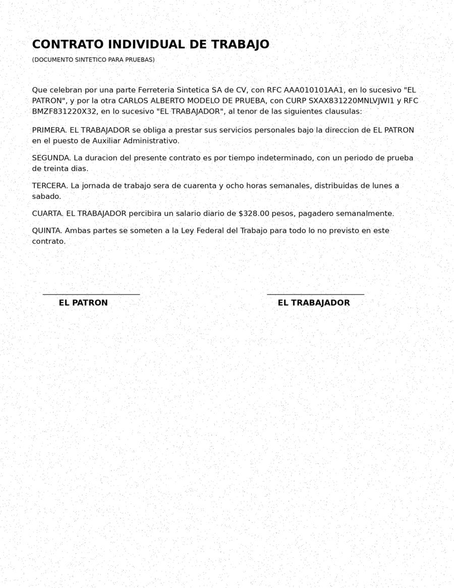
corpus/contrato-1.png · generado por medicion/genera-expediente.py. Trae un RFC y una CURP dentro del primer párrafo.Pasos
- Localiza la tarjeta
contrato. Fíjate en que dice «0 claves — sin esquema: solo se clasifica». - Suelta
contrato-1.pngen su zona de carga. - Espera el borde de color. En CPU tarda entre 1 y 3 segundos.
Resultado esperado
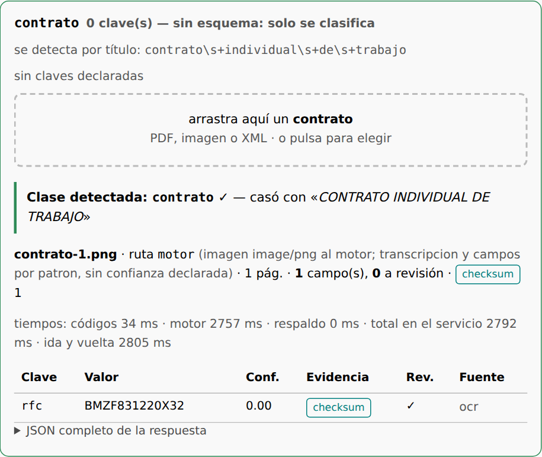
- Veredicto verde: casó con «CONTRATO INDIVIDUAL DE TRABAJO».
- Sale un solo campo,
rfc, con evidencia checksum y ✓: el motor lo leyó y pasó el dígito verificador. - La CURP que también está en el párrafo no salió. En la transcripción del motor se ve por qué: leyó un corchete donde iba la J (
SXAX831220MNLV]WI1), y con eso ya no tiene forma de CURP. No es un fallo de la prueba, es lo que mide: un identificador en texto corrido y escaneado se lee peor que uno en su propia línea. - Como la clase no tiene esquema, no hay línea de «Esquema»: nada es obligatorio.
Alta en el IMSS
ruta: motor · 3 clavesComprobar que el comprobante de afiliación se clasifica y que el NSS sale de la tabla del documento con su dígito Luhn validado.
Documento de entrada
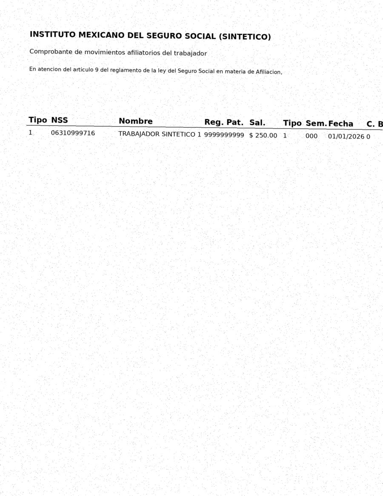
corpus/alta-imss-1.png · generado por medicion/genera-alta-imss.py. Forma «tabla»: el NSS va debajo del encabezado.Pasos
- Localiza la tarjeta
alta_imss. Sus claves son nss curp rfc, las tres con validador. - Suelta
alta-imss-1.png. - Espera el borde verde.
Resultado esperado
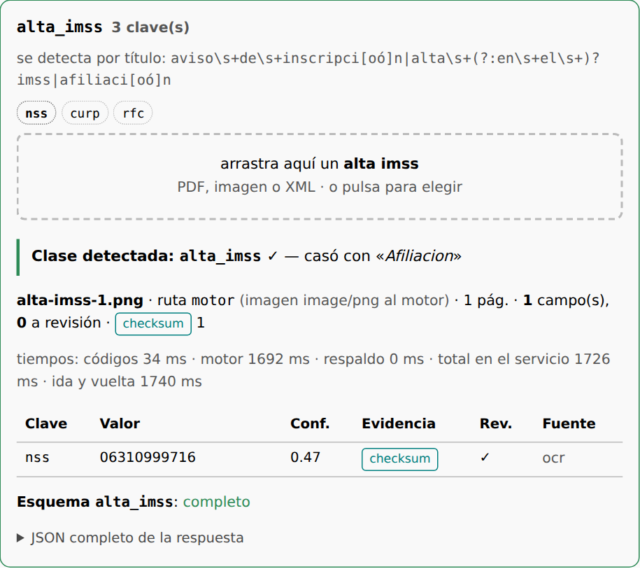
- Casó con «Afiliacion», una de las tres palabras del patrón.
nsscon evidencia checksum aunque la confianza del motor sea 0.47: el dígito verificador manda.- Esquema «completo»: de las tres claves solo el NSS es obligatorio en este proyecto (va en negrita en la tarjeta), así que no falta nada aunque CURP y RFC no salieran.
Credencial para votar
ruta: motor · 1 claveComprobar que una fotocopia de credencial se clasifica por «INSTITUTO NACIONAL ELECTORAL» y que la CURP impresa sale validada.
Documento de entrada
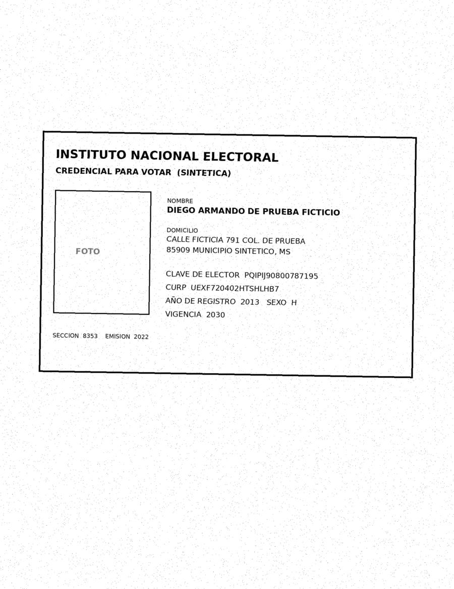
corpus/ine-1.png · generado por medicion/genera-expediente.py. La credencial va centrada en la hoja, como una fotocopia.Pasos
- Localiza la tarjeta
ine. - Suelta
ine-1.png. - Espera el borde verde.
Resultado esperado
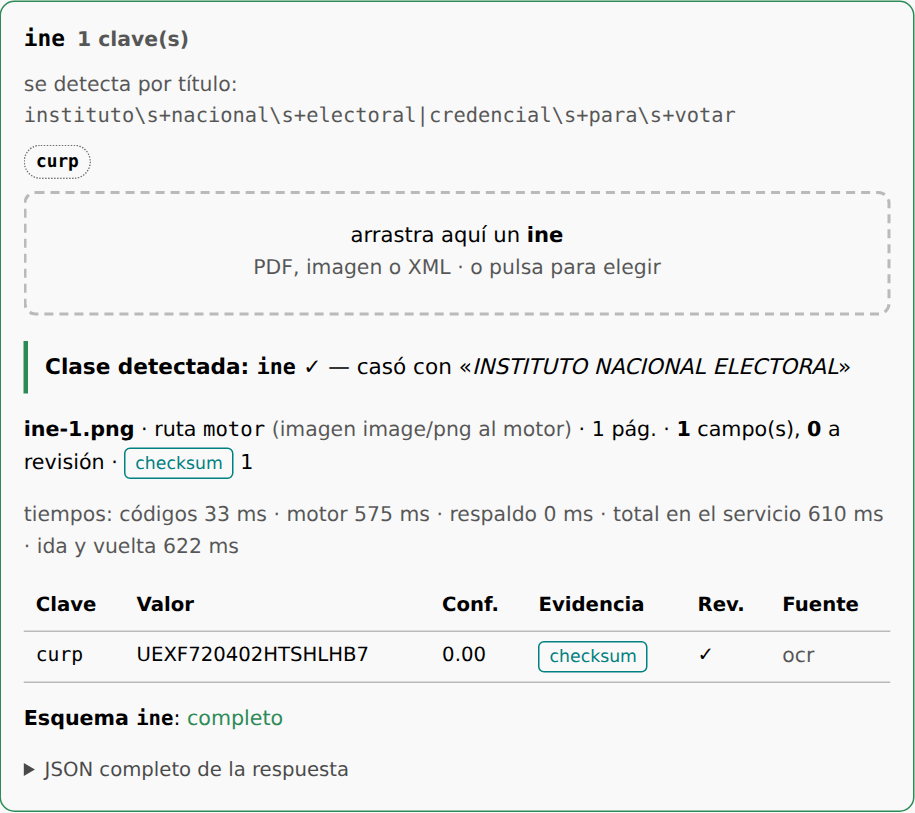
- Un campo,
curp, con checksum. - La clave de elector y el domicilio no salen: el proyecto no los declara. Lo que no está en los patrones del proyecto no se busca.
Constancia de CURP
ruta: motor · 1 claveComprobar que la constancia se clasifica por «Clave Única de Registro de Población» y que la CURP sale validada.
Documento de entrada
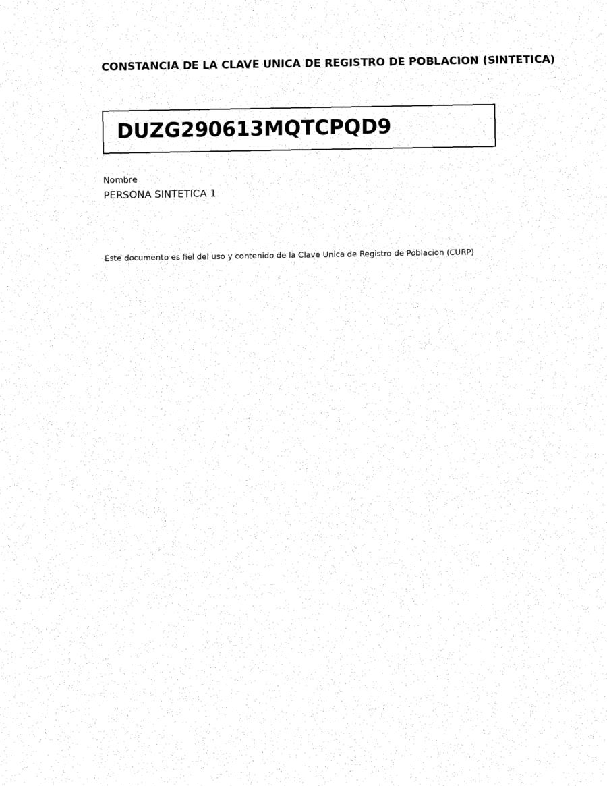
corpus/constancia-curp-1.png · generado por medicion/genera-constancias-curp.py.Pasos
- Localiza la tarjeta
curp. - Suelta
constancia-curp-1.png. - Espera el borde verde.
Resultado esperado
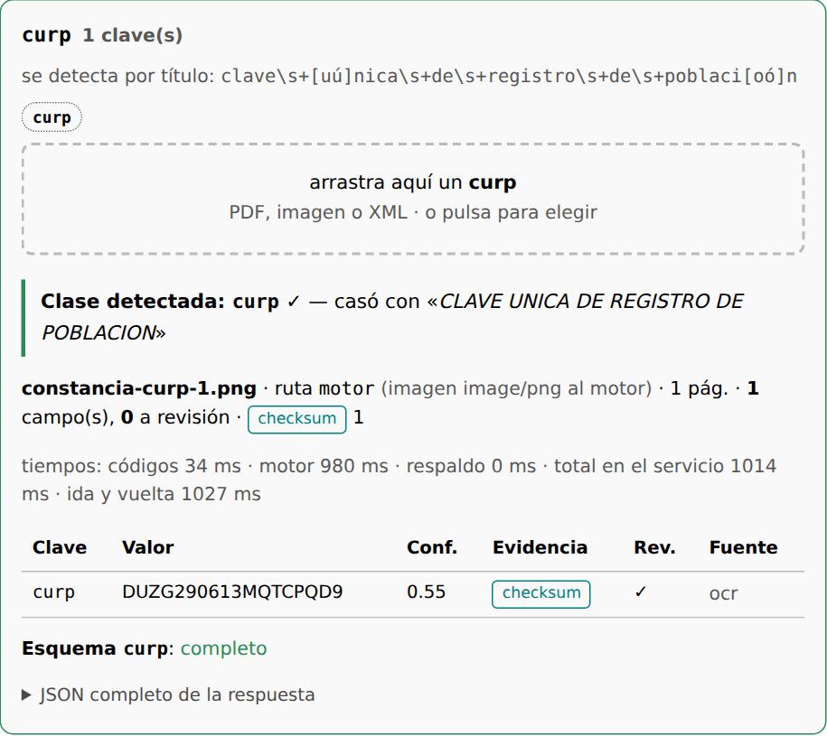
- Un campo,
curp, con checksum. - Prueba útil de comparación: suelta el mismo archivo en la tarjeta
ine. Saldrá en rojo con «detectó curp, esperabas ine»: el servicio clasifica por lo que dice la hoja, no por la tarjeta donde la sueltas.
Constancia de situación fiscal
ruta: motor · 2 clavesComprobar que la constancia del SAT se clasifica y que salen los dos identificadores del contribuyente, RFC y CURP, validados.
Documento de entrada
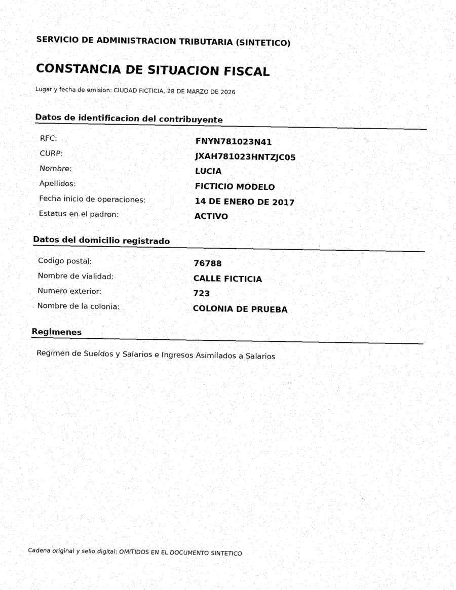
corpus/constancia-fiscal-1.png · generado por medicion/genera-expediente.py. Cadena original y sello omitidos: es sintética.Pasos
- Localiza la tarjeta
constancia_fiscal. Claves: rfc curp. - Suelta
constancia-fiscal-1.png. - Espera el borde verde.
Resultado esperado
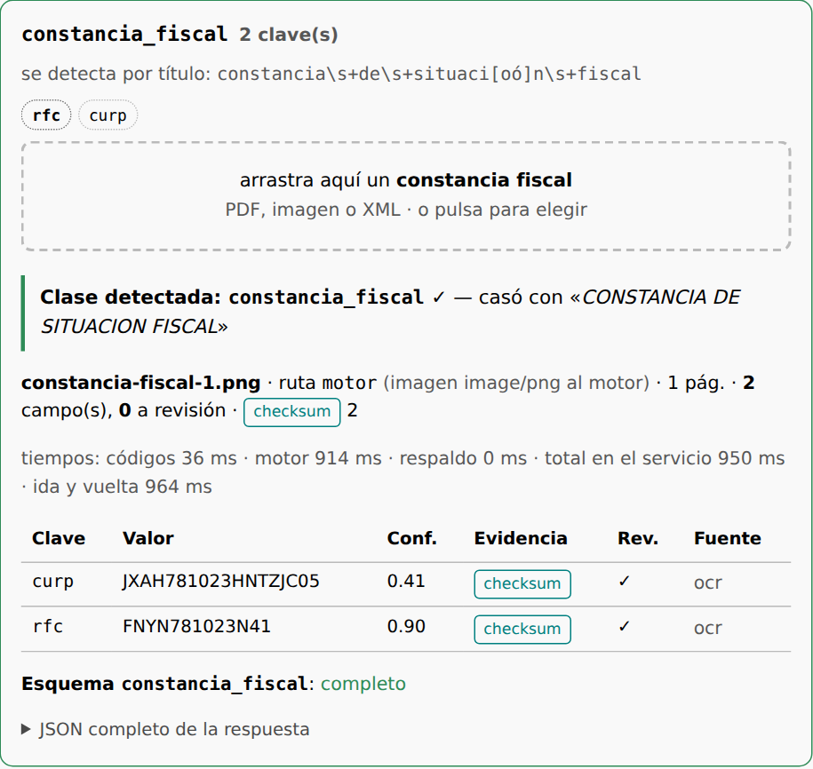
- Dos campos,
curpyrfc, ambos checksum, ninguno a revisión. - Es el caso ideal del motor por zonas: cada identificador va en su propia línea con su etiqueta delante.
Carta de recomendación
ruta: motor · sin esquemaComprobar que una carta en prosa se clasifica por su título aunque no traiga ningún identificador que extraer.
Documento de entrada
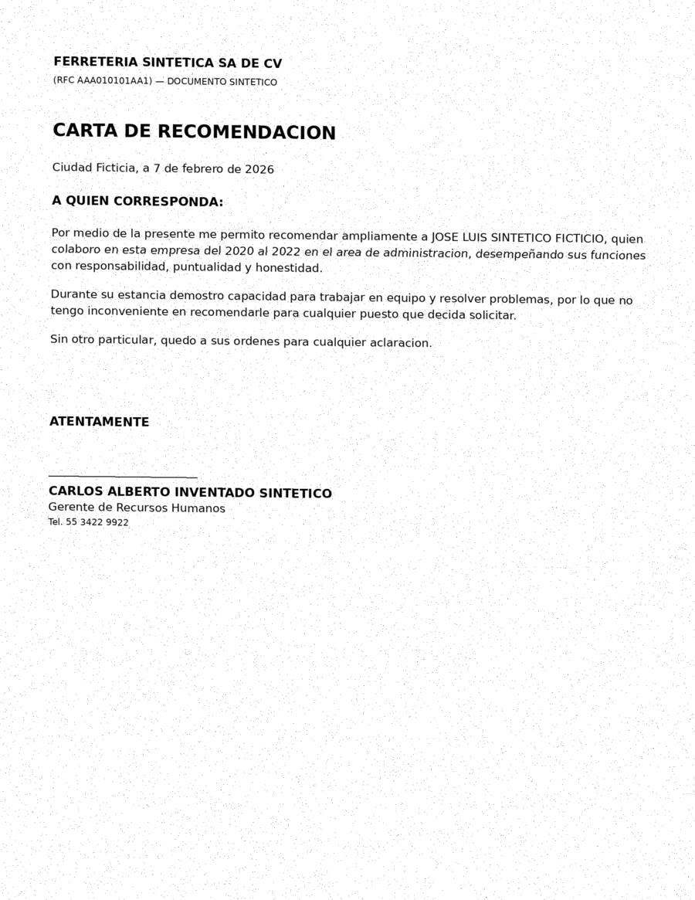
corpus/carta-recomendacion-1.png · generado por medicion/genera-expediente.py.Pasos
- Localiza la tarjeta
carta_recomendacion, que dice «0 claves». - Suelta
carta-recomendacion-1.png. - Espera el borde verde.
Resultado esperado
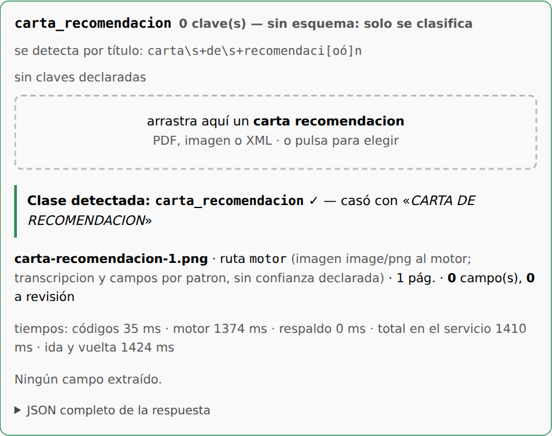
- Verde y «Ningún campo extraído». Las dos cosas a la vez son correctas: la clase casó y no había nada declarado que buscar.
- El RFC de la empresa que firma, en la cabecera, no sale: el motor leyó la letra O donde iba el cero (
AAAO10101AA1) y eso ya no tiene forma de RFC. Compara con la minuta, donde esa misma confusión sí se corrige porque el patrón la captura con su etiqueta.
Factura escaneada
ruta: motor · 10 clavesEl caso más rico: una factura como imagen obliga al motor a leer diez campos, y aquí se ve qué pasa cuando el OCR lee mal un RFC.
Documento de entrada
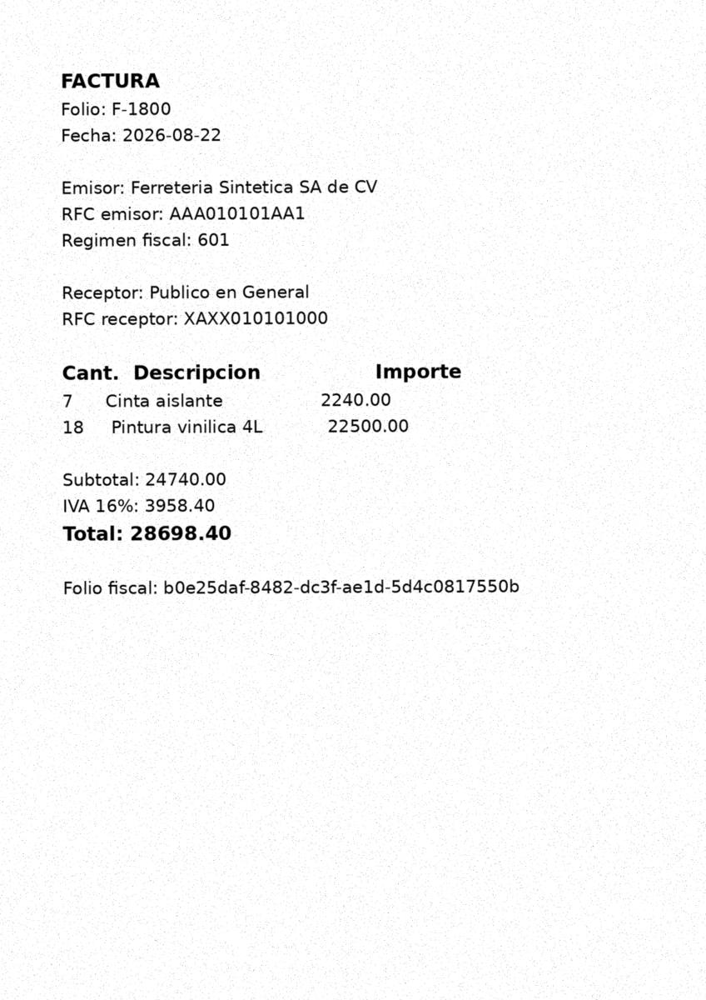
corpus/factura-escaneada-1.png · generado por medicion/genera-corpus.py, con rotación y ruido de escáner.Pasos
- Localiza la tarjeta
factura. Tiene diez claves; las obligatorias van en negrita. - Suelta
factura-escaneada-1.png. - Espera el borde verde y lee la tabla entera: aquí hay filas de los dos tipos.
Resultado esperado
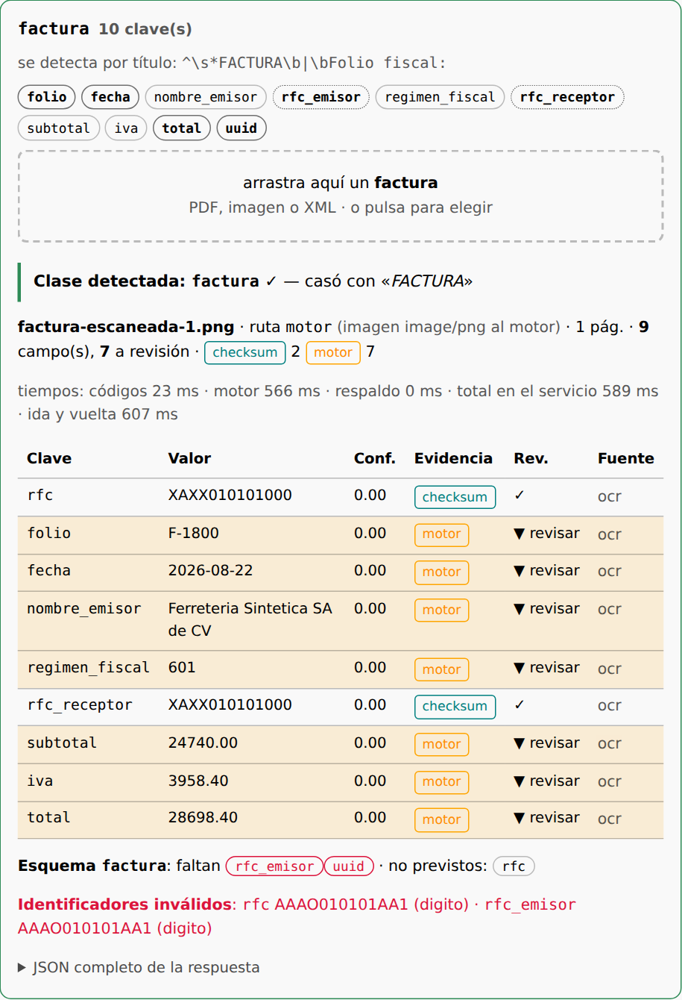
- Nueve campos, siete a revisión: folio, fecha, emisor, régimen, subtotal, IVA y total solo los dice el motor (motor), y sin segunda fuente van a revisión.
rfc_receptorsale ✓ con checksum: es el genéricoXAXX010101000, que el proyecto admite.- Faltan rfc_emisor y uuid. Baja a «Identificadores inválidos»: el motor leyó
AAAO010101AA1, con una letra O de más (trece caracteres; el bueno,AAA010101AA1, tiene doce). El dígito verificador no cuadra, no hay una sola sustitución que lo arregle, y el validador lo descarta: por eso cuenta como faltante. Eso es el sistema funcionando: un RFC mal leído no entró a la base. - El
uuidfalta porque el folio fiscal impreso no se leyó completo. En una factura real lo confirmarías con el QR (evidencia codigo), que esta prueba no ejercita. - «No previstos: rfc»: el patrón genérico de RFC del expediente también casó; como no está en el esquema de factura, se lista aparte.
Factura en PDF con texto
ruta: capa cero · 10 clavesLa misma clase por la otra puerta: un PDF generado por software trae su texto dentro y se lee sin motor, exacto y sin nada a revisión.
Documento de entrada
FACTURA
Folio: F-1804
Fecha: 2026-03-15
Emisor: Ferreteria Sintetica SA de CV
RFC emisor: AAA010101AA1
Regimen fiscal: 601
Receptor: Publico en General
RFC receptor: XAXX010101000
Cant. Descripcion Importe
2 Tornillo 1/4 178.00
11 Cable calibre 12 979.00
Subtotal: 1157.00
IVA 16%: 185.12
Total: 1342.12
Folio fiscal: 70f56968-5797-433f-d484-95b3c7244277corpus/factura-digital-1.pdf · el texto que lleva dentro, tal cual. Generado por medicion/genera-corpus.py.Pasos
- En la misma tarjeta
factura, sueltafactura-digital-1.pdf. - Fíjate en la velocidad: contesta en milisegundos, porque no pasa por Tesseract.
Resultado esperado
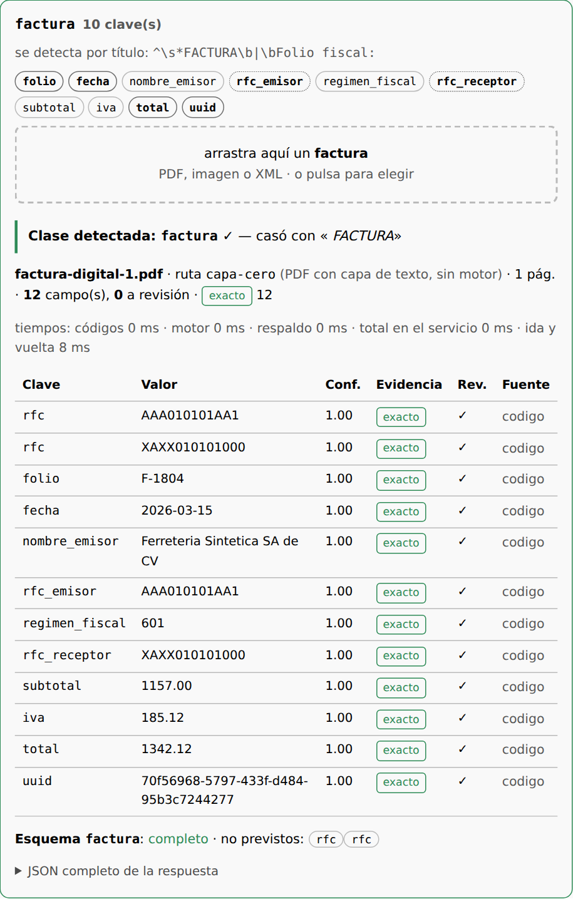
- Ruta capa-cero («PDF con capa de texto, sin motor») y tiempos de motor en 0 ms.
- Doce campos, todos exacto con confianza 1.00, cero a revisión. Esquema completo, incluido el
uuid. - Compara con la escaneada: mismo tipo de documento, mismos patrones, y la diferencia entera está en la ruta. Por eso la regla del proyecto es «si hay PDF digital o XML, no se escanea».
- «No previstos: rfc rfc»: el patrón genérico casó con los dos RFC del texto.
Minuta de reunión
ruta: motor · 4 clavesComprobar una hoja con campos de texto libre: fecha, número de asistentes y responsable, más el RFC del emisor.
Documento de entrada
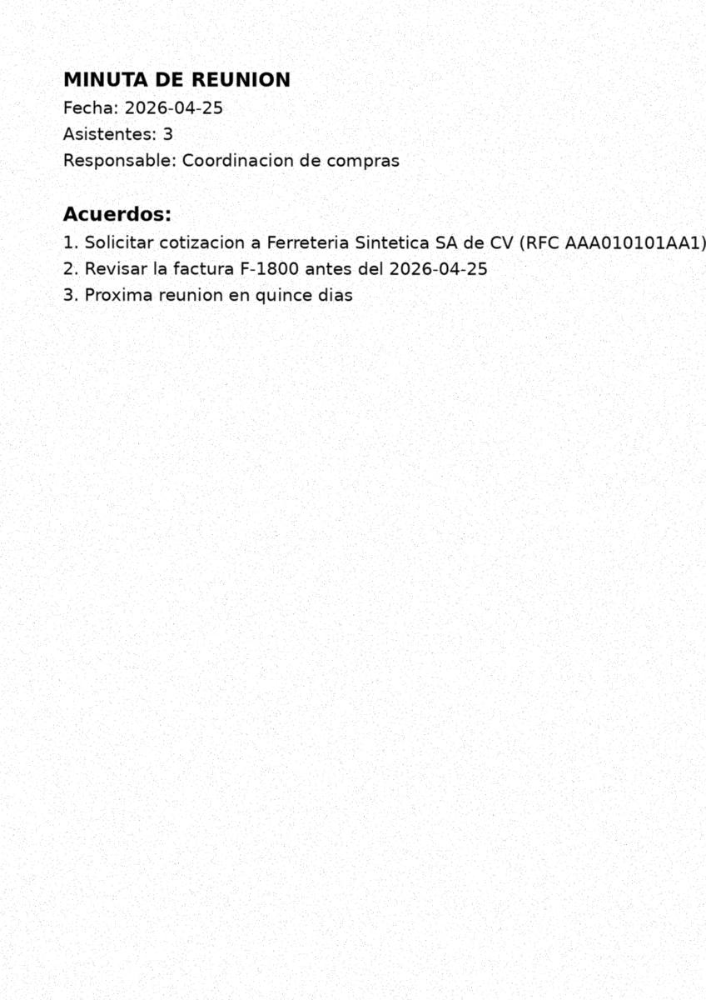
corpus/minuta-escaneada-1.png · generado por medicion/genera-corpus.py.Pasos
- Localiza la tarjeta
minuta. Claves: fecha, asistentes, responsable, rfc_emisor. - Suelta
minuta-escaneada-1.png. - Espera el borde verde.
Resultado esperado
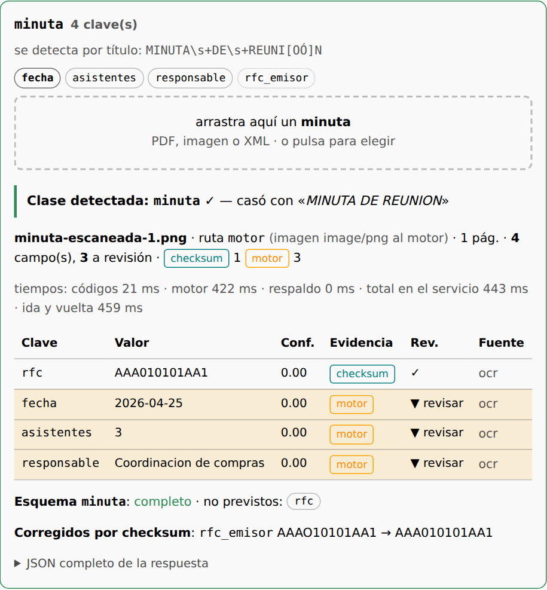
- Cuatro campos: el RFC con checksum y ✓; fecha, asistentes y responsable con motor y ▼ revisar.
- Es la regla general de un escaneo: lo que no lleva dígito verificador ni segunda fuente, va a revisión. No es que esté mal leído; es que nadie lo confirma.
- «Corregidos por checksum: rfc_emisor AAAO10101AA1 → AAA010101AA1». El motor leyó una O por un cero; como solo había una sustitución que cuadrara con el dígito verificador, el validador la propuso. El valor corregido se reporta en su propia línea y no entra a la tabla de campos: decidir si se acepta es de quien revisa.
CFDI en XML
ruta: xml · 6 clavesEl documento fiscal de verdad es el XML; el PDF es solo su impresión. Esta tarjeta no se detecta por título: la ruta XML le asigna la clase cfdi directamente.
Documento de entrada
<?xml version="1.0" encoding="UTF-8"?>
<!-- SINTETICO: escrito a mano, no proviene de ningun CFDI real. -->
<cfdi:Comprobante xmlns:cfdi="http://www.sat.gob.mx/cfd/4"
Version="4.0" Serie="N" Folio="0035" Fecha="2025-07-01T09:39:32"
FormaPago="03" MetodoPago="PUE" Moneda="MXN" SubTotal="1000.00"
Total="1160.00" TipoDeComprobante="I" ...>
<cfdi:Emisor Rfc="AAA010101AAA" Nombre="OPERADORA DE EJEMPLO SA DE CV"
RegimenFiscal="601"/>
<cfdi:Receptor Rfc="XAXX010101000" Nombre="PUBLICO EN GENERAL" .../>
...pruebas/fixtures/cfdi-40-ingreso.xml · fixture del paquete, versionado en el repositorio.Pasos
- Localiza la tarjeta
cfdi. Solo acepta archivos.xml. - Suelta
cfdi-40-ingreso.xml. - Baja por la tabla: son 26 campos.
Resultado esperado
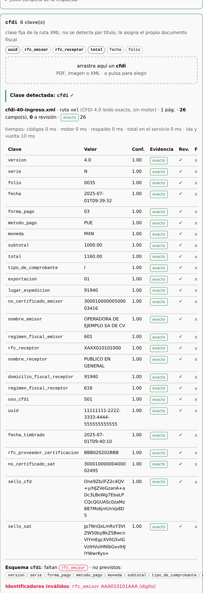
- Ruta xml («CFDI 4.0 leído exacto, sin motor»). 26 campos exacto, cero a revisión: versión, serie, folio, UUID del timbre, sellos, certificados.
- Falta rfc_emisor y aparece en inválidos:
AAA010101AAAes el RFC de pruebas clásico y su dígito verificador no cuadra a propósito. Que el XML sea exacto no exime al identificador de validarse. - Nada de esto verifica el sello fiscal. Leer bien no es autenticar: eso lo decide el proyecto, fuera de esta herramienta.
Cuando algo sale mal
Tres situaciones que verás seguro. Ninguna es un error de la herramienta: son las respuestas correctas a un documento o a un entorno que no es lo que se esperaba.
Soltaste el documento en la tarjeta equivocada
El servicio clasifica por lo que dice la hoja, no por dónde la sueltas. Aquí, el alta del IMSS cayó en la tarjeta minuta.
- Suelta
alta-imss-1.pngen la tarjetaminuta. - Lee el veredicto rojo: nombra las dos clases y el fragmento que hizo casar la detectada.
Qué hacer. Si el documento sí es lo que creías, el problema es el patrón de título del proyecto, no el documento. Si no lo es, ya sabes qué es: la clase detectada.
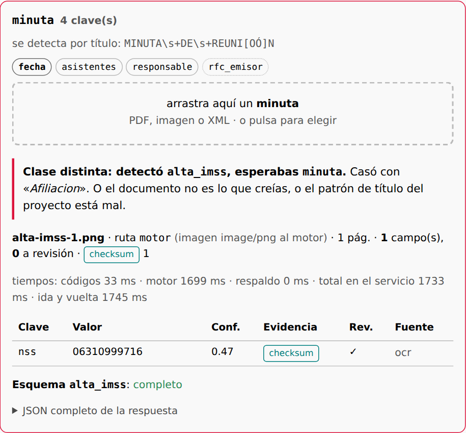
Ningún título casó
Un recibo de caja no es ninguna de las nueve clases. La tarjeta queda en ámbar: sin clase no hay esquema que aplicar, y los campos que salgan son los que los patrones encontraron sueltos.
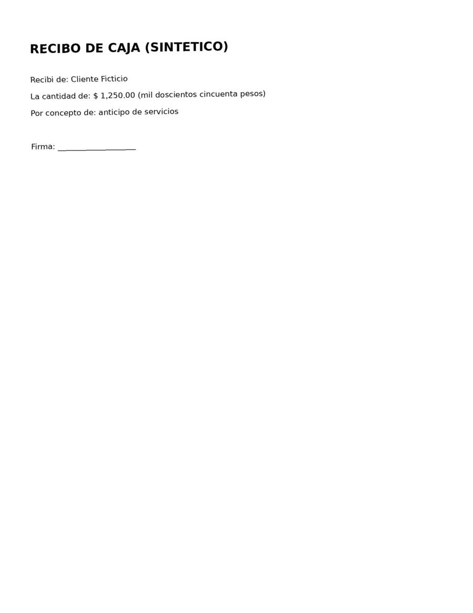
Qué hacer. Si el documento debería estar en el proyecto, hay que declararle una clase con su patrón de título. Si no debería, el ámbar es la respuesta correcta.
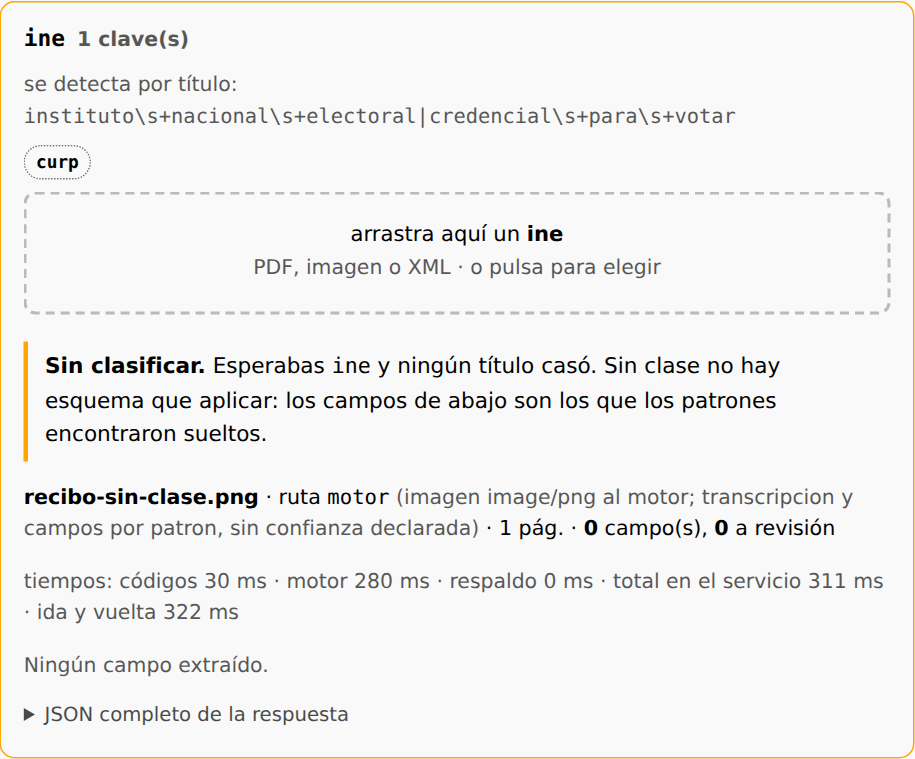
El servicio no está
Si el contenedor no está arriba, la barra de estado lo dice antes de que sueltes nada, y explica dónde lo buscó y cómo levantarlo. Si aun así sueltas un documento, la tarjeta se pone en rojo con «no se pudo contactar con el servicio» en vez de quedarse esperando.
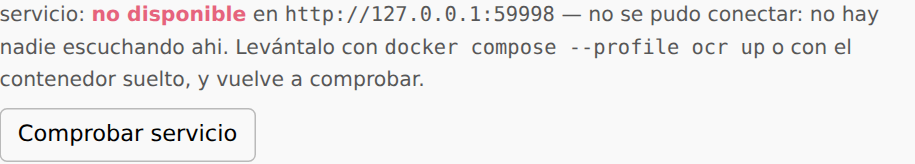
Qué hacer. Levanta el contenedor como en «Antes de empezar» y pulsa Comprobar servicio. Comprueba también que el puerto sea el 8080 del servicio, no el de otra cosa que tengas corriendo.
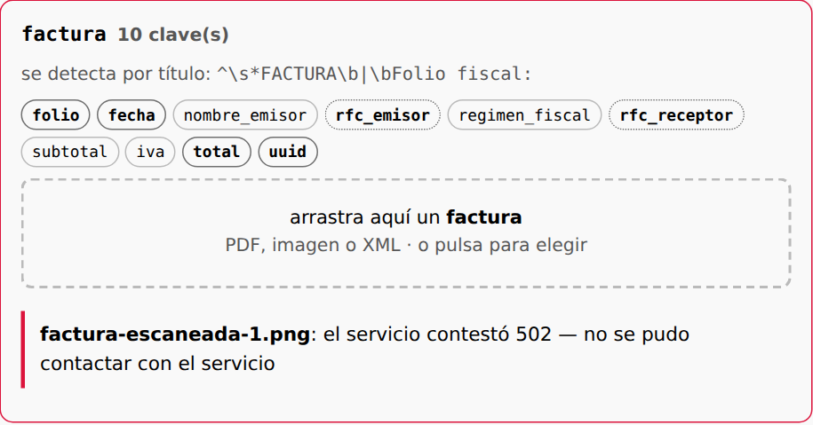
Documentos de prueba
Todo el material es sintético y se genera con los scripts de medicion/. La carpeta corpus/ está fuera de git a propósito: es el sitio donde un proyecto pone después sus documentos reales, y esos no se versionan nunca. Si la carpeta está vacía, se regenera con los tres comandos de abajo.
| Archivo | Clase | Lo genera | Qué trae |
|---|---|---|---|
contrato-1.png, -2 | contrato | python3 medicion/genera-expediente.py | Título, RFC y CURP dentro del primer párrafo, cláusulas, firmas. |
ine-1.png, -2 | ine | Credencial centrada en la hoja, con CURP y clave de elector. | |
constancia-fiscal-1.png, -2 | constancia_fiscal | RFC y CURP en líneas etiquetadas, domicilio, régimen. | |
carta-recomendacion-1.png, -2 | carta_recomendacion | Carta en prosa; el único RFC va entre paréntesis en la cabecera. | |
alta-imss-1.png a -4 | alta_imss | python3 medicion/genera-alta-imss.py | Dos formas reales de la hoja: tabla y formulario. NSS con dígito Luhn válido. |
constancia-curp-1.png a -4 | curp | python3 medicion/genera-constancias-curp.py | Tres formas de constancia. CURP con dígito válido. |
factura-escaneada-1.png a -4 | factura | python3 medicion/genera-corpus.py | Imagen con ruido y rotación de escáner. |
factura-digital-1.pdf a -6 | factura | PDF con capa de texto: entra por la capa cero. | |
minuta-escaneada-1.png, -2 | minuta | Fecha, asistentes y responsable en líneas etiquetadas. | |
pruebas/fixtures/cfdi-40-ingreso.xml | cfdi | versionado en git | CFDI 4.0 sintético con timbre. El RFC del emisor lleva dígito inválido a propósito. |
Cada imagen va acompañada de un .json con los valores que se sembraron (la «verdad» del documento) y una marca de que es sintético. Todos los RFC, CURP y NSS sintéticos pasan el dígito verificador del propio núcleo, salvo los que lo fallan a propósito y así lo dicen.
Preguntas frecuentes
Abro el servicio en el navegador y dice «ruta desconocida»
Es correcto. El servicio de 8080 es una API sin página: en el navegador solo responde /health. Extraer exige un POST con el archivo en el cuerpo. Para probar con el ratón, la página es la del banco de pruebas en 4321.
El contenedor dice que está sano pero toda extracción falla con ENOENT
Falta el --tmpfs /tmp/extractor al arrancarlo. Ver «Antes de empezar».
Todos los campos salen con confianza 0.00
El motor por zonas no declara confianza por campo en todos los documentos. No importa para la decisión: la revisión la decide la evidencia, no la confianza. Un campo checksum con confianza 0.00 es un campo validado.
Un campo que se ve perfecto en la hoja va a revisión
Porque solo lo dice el motor. «Bien leído» y «confirmado» no son lo mismo: sin dígito verificador, código o segunda fuente, el sistema no puede saber que está bien, y lo marca para que lo mire una persona.
El PDF escaneado de prueba del paquete no se lee
pruebas/fixtures/escaneo.pdf lleva un JPEG mínimo pensado para pruebas de estructura, no una página real; el motor sale con error y la tarjeta lo dice en rojo. Para un escaneo en PDF de verdad usa corpus/factura-escaneada-1.pdf, que sí se lee.
Estoy en WSL y el navegador está en Windows
La página del banco escucha solo en 127.0.0.1 de WSL. Ábrela desde un navegador dentro de WSL, o usa la dirección que Windows le da a WSL en vez de localhost.